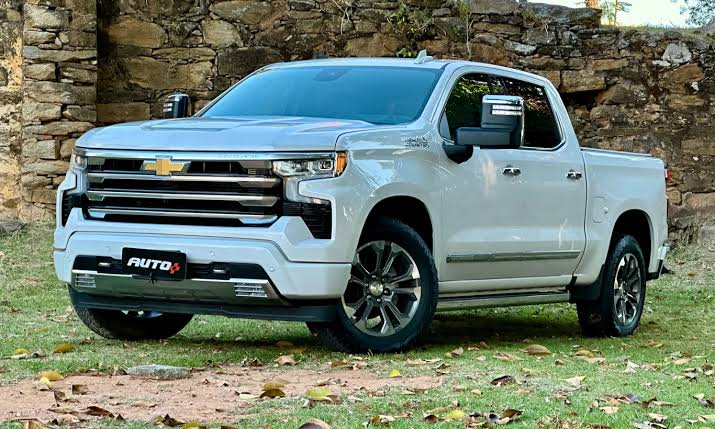
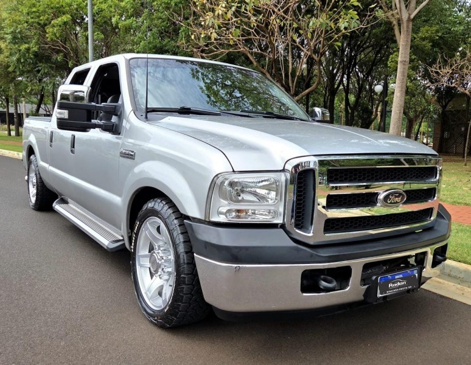
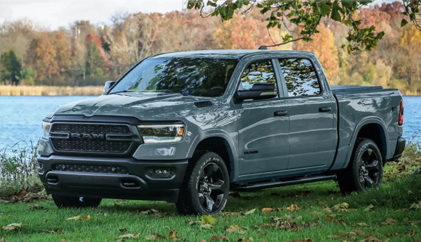
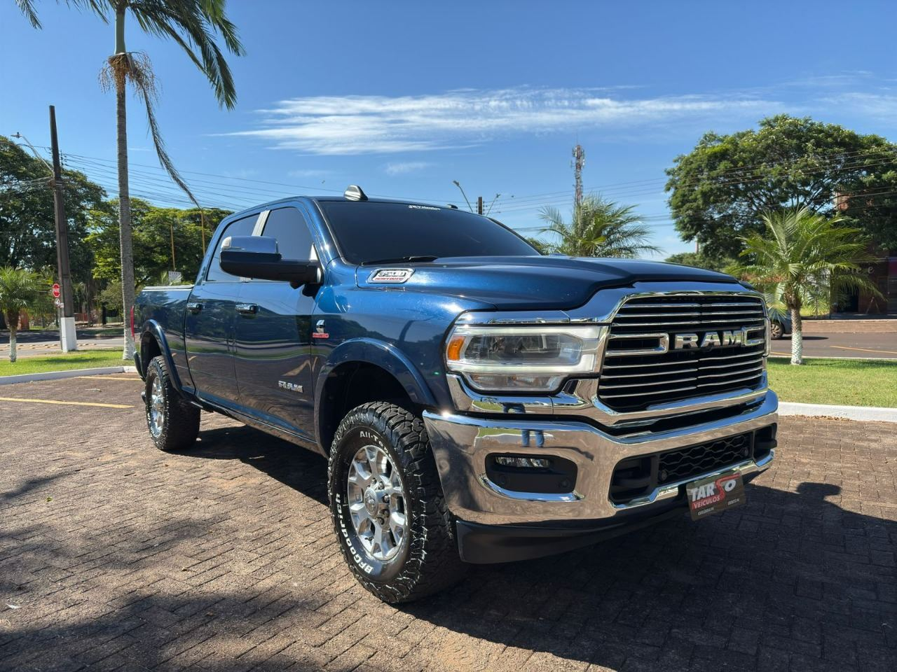
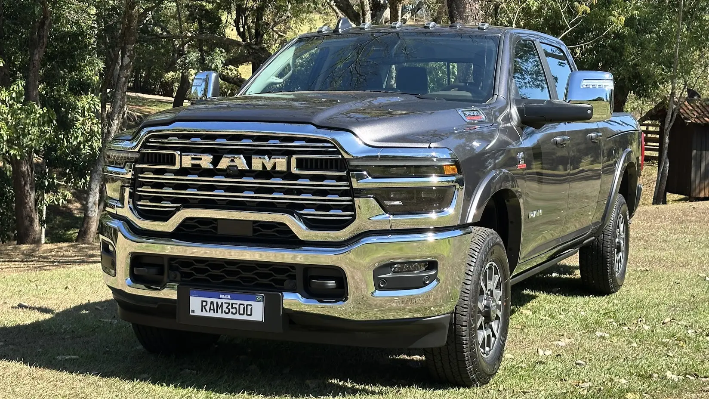
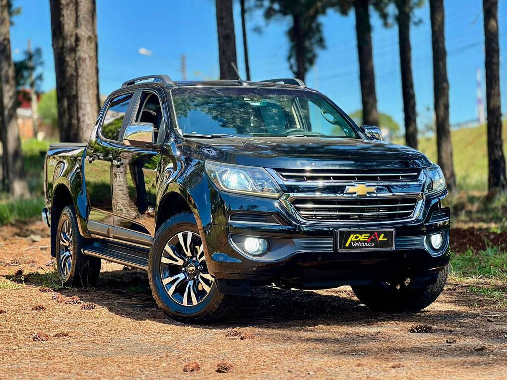
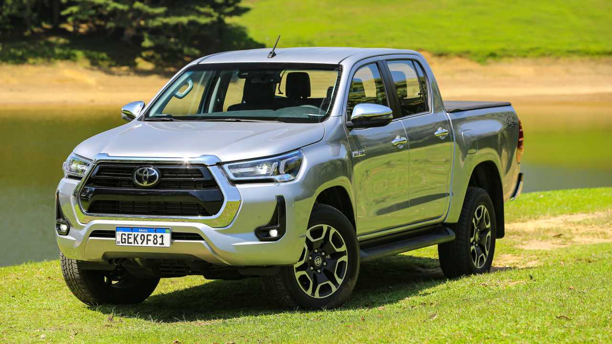
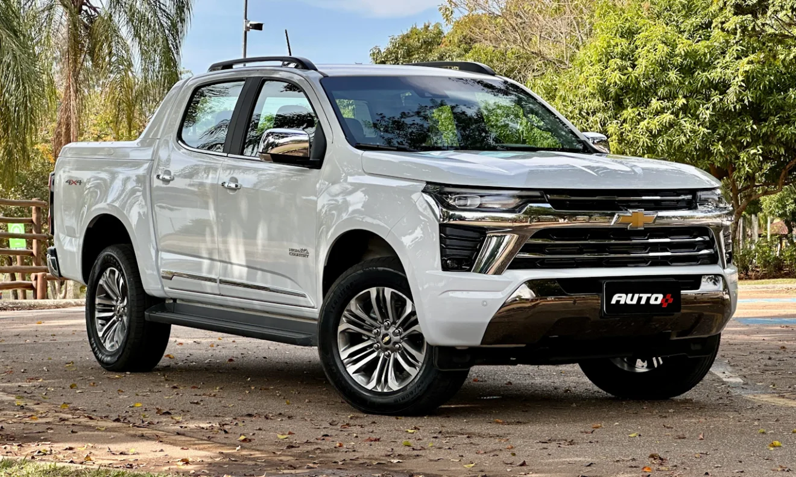
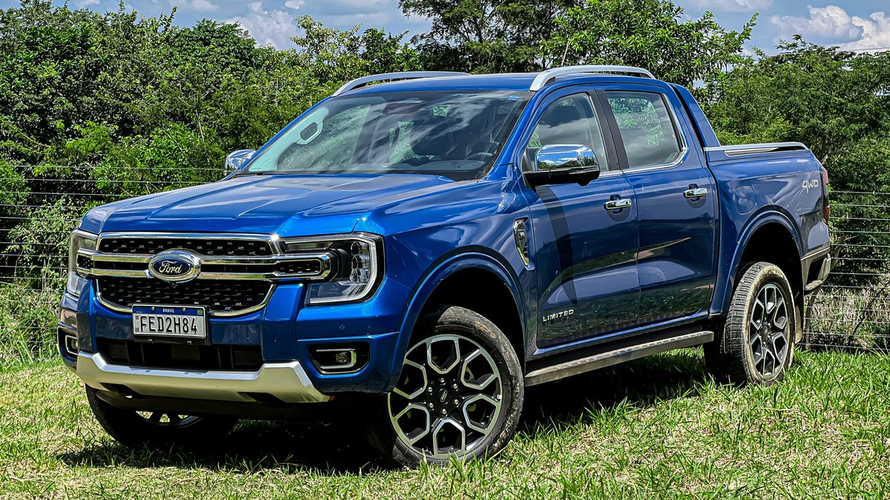
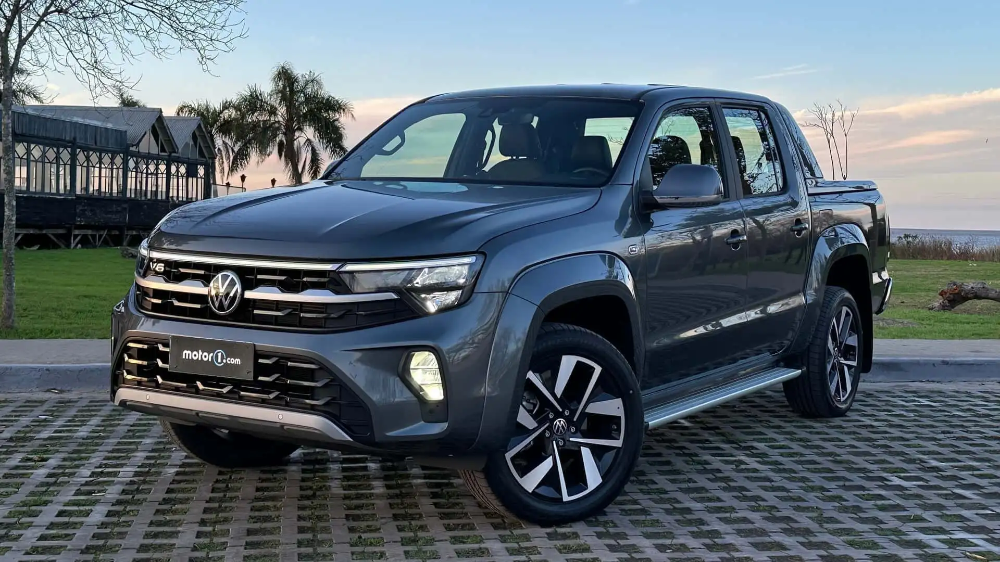

Picape full-size com motor V8, alta capacidade de reboque e tecnologia embarcada para trabalho pesado.
Tração 4x4, controle de estabilidade, câmera de ré e central multimídia com conectividade avançada.

Picape robusta de trabalho pesado, conhecida pela durabilidade e capacidade de carga elevada.
Tração 4x4, suspensão reforçada, cabine ampla e motor diesel forte.

Picape grande com acabamento premium, bom espaço interno e excelente comportamento de estrada.
Interior refinado, central multimídia, assistente de saída em rampa e controles eletrônicos de estabilidade.

Picape pesada para uso comercial, com grande capacidade de reboque e acabamento resistente.
Cabine robusta, tração 4x4 e suspensão adaptada para cargas pesadas.

Picape super pesada com foco em capacidade máxima de carga e reboque.
Carroceria reforçada, freios potentes e sistemas de estabilidade para trabalhos pesados.

Picape média com boa resistência e desempenho para uso misto profissional e pessoal.
Tração 4x4, central multimídia, controle de estabilidade e acabamento funcional.

Picape versátil com estrutura resistente, boa dirigibilidade e reputação de durabilidade.
Sistema de tração 4x4, assistente de subida em rampa e central multimídia moderna.

Atualização do modelo S10 com mais tecnologia, conforto e desempenho refinado.
Central multimídia atualizada, controle de estabilidade e interior mais moderno.

Picape média-grande com tecnologia de segurança e capacidade off-road equilibrada.
Assistente de pré-colisão, controle de descida e central multimídia com integração de smartphones.

Picape premium com acabamento refinado, tecnologia de ponta e ótima resposta em estrada e trilha.
Tração 4Motion, interior sofisticado e central multimídia com recursos conectados.